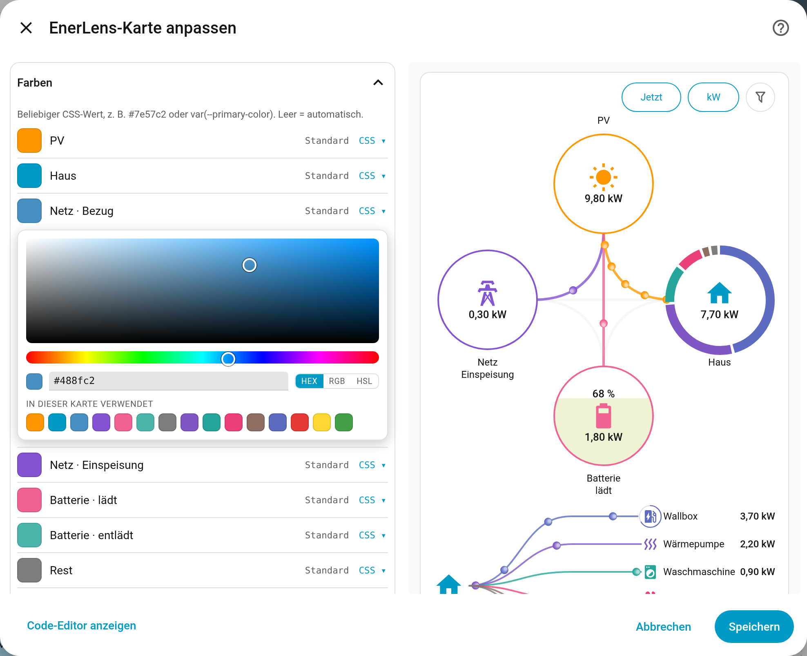
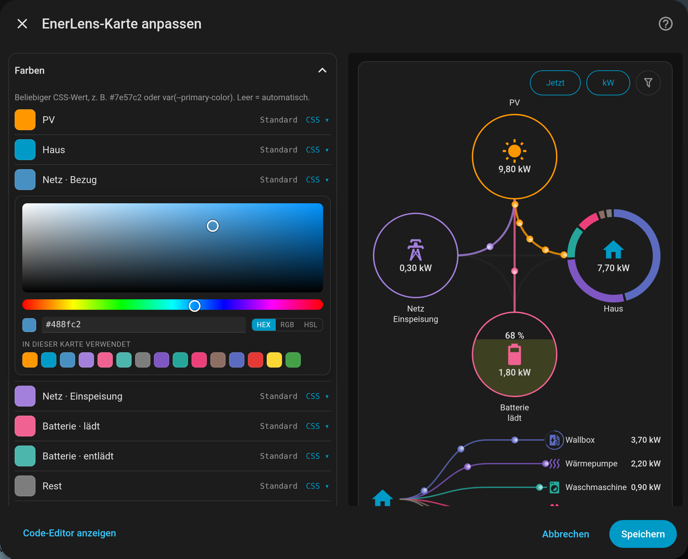

EnerLens Card
Eine hoch-konfigurative Energiefluss-Karte für Home Assistant. PV, Netz, Haus und Batterie in fünf Anordnungen — dazu optional eine Aufschlüsselung, woraus der Hauswert und die PV-Anteile eigentlich bestehen.
Die Karte hier ist keine Aufnahme, sondern die echte Karte mit ausgedachten Werten – probier die Schalter darüber und die Quick-Buttons im Kopf der Karte.
Was sie anders macht
Fünf Anordnungen. PV, Netz, Haus und Batterie stehen im Kreuz, in einem von zwei um 45° gedrehten Quadraten oder in einem von zwei Dreiecken, mit geschwungenen oder geraden Linien. Die Listen rücken jeweils an ihren Knoten: beim Quadrat · PV links stehen die PV-Zeilen links der Zeichnung, die Verbraucher rechts (siehe Anordnungen).
Verbraucher können optional angegeben werden. Sofern einzelne Verbraucher erfasst werden (z. B. eine Wärmepumpe oder ein mit einem Shelly gemessenes Gerät), können ihre Entitäten hinterlegt werden. Die Liste neben dem Haus-Knoten und der Ring darum zeigen dann, woraus der Hauswert besteht. Der Rest ist der Hauswert minus die sichtbaren Verbraucher: Er enthält, was nicht einzeln gemessen wird, und dazu gemessene Verbraucher, die gerade unter ihrer Schwelle liegen oder vom Limit verdrängt sind.
Zeitlicher Mittelwert. Ein Live-Leistungsdiagramm springt binnen Sekunden um Kilowatt. Alternativ zeigt die Karte gleitende Mittelwerte — voreingestellt über 2 und 15 Minuten, frei einstellbar; ein Chip im Kopf schaltet reihum Jetzt, Ø 2 min und Ø 15 min. Sie beruhigen das Bild, ohne die Zahlen zu verfälschen. Ein Klick auf ein Element öffnet weiterhin den Dialog von Home Assistant mit der echten Historie; Netz und Batterie mit je zwei Sensoren zeigen beide Richtungen zusammen in einem Fenster.
Energie statt Leistung. Auf Knopfdruck zeigt die Karte statt der Leistung die Energie eines Zeitraums: was heute von der Sonne kam, was das Haus diese Woche verbraucht hat und wie viel ins Netz ging. Zur Wahl stehen Heute, 24 h, Woche, 7 Tage, Monat und 30 Tage. Energie-Sensoren braucht es dafür nicht: Die Karte summiert die Statistik, die Home Assistant von den Leistungssensoren ohnehin führt. Lücken darin werden gefüllt und farblich markiert. Liste und Ring zeigen dann, welcher Verbraucher wie viel davon hatte. Für Bezug und Einspeisung bzw. Laden und Entladen braucht es je Richtung einen Sensor – hat man nur einen mit Vorzeichen, teilt ihn ein Helfer auf (siehe Energie für einen Zeitraum).
Quick-Buttons im Kopf. Bis zu vier Quick-Buttons schalten die Ansicht mit einem Tipp: Jetzt oder Mittelwert, Leistung oder Energie, die PV-Skala, kurze oder ganze Verbraucherliste. Jeder schaltet bei jedem Tipp weiter oder zeigt aufgeklappt alle seine Werte nebeneinander. Für alle zusammen gibt es drei Darstellungen: Segment-Buttons, Segment-Buttons kompakt und Einzel-Buttons. Welche Werte ein Quick-Button anbietet, ist einstellbar; mit nur einem Wert verschwindet er, und die Karte zeigt auf jedem Gerät dasselbe. Jede Karte merkt sich, worauf sie zuletzt stand (siehe Quick-Buttons).
Segment-Buttons, zum Weiterschalten:
Segment-Buttons, aufgeklappt:
Segment-Buttons kompakt, aufgeklappt:
Einzel-Buttons, aufgeklappt:
Die Verbraucher-Liste sortiert sich und gleitet. Zeilen ordnen sich im festen Takt nach Leistung und gleiten auf ihre neue Position. Ein kleiner Filter-Knopf oben zeigt auf Wunsch alle Verbraucher unabhängig von ihrer Leistung — um den Verlauf eines Geräts anzutippen, das gerade still geworden ist. Dabei wird der Rest kleiner, weil die bisher ausgeblendeten Verbraucher eine eigene Zeile bekommen. Wer sehen will, wie viel Leistung keinem Sensor zugeordnet ist, schaltet den Filter deshalb aus.
Der Ring zieht mit. Ändert sich die Reihenfolge, wandern seine Segmente an
ihren neuen Platz und überholen auf einer inneren Bahn — in jeder Karte auf
dieser Seite zu sehen. Mit ring.animation: fade bleiben sie stehen und
blenden ihre Farben über.
Der Fluss ist frei einstellbar. Die Punkte zeigen die Leistung: Sie werden
schneller und zahlreicher, je mehr fließt. Ab welcher Leistung sie loslaufen,
wie schnell sie höchstens werden und wie viele es höchstens sind, lässt sich
einstellen — mit einem einzigen Regler flow.peak_w für alles oder Schwelle
für Schwelle. Dazu kommen sechs Designs für die Punkte, eine gemeinsame
Punktfarbe, und ruhende Linien lassen sich abdunkeln oder ausblenden. Alles
davon steht auch im Editor.
Zusatzwerte an den Knoten. Jeder Kreis kann einen zweiten Wert zeigen – im Kreis oder direkt daneben, mit einem kurzen Vorsatz: den Tagesertrag neben der PV-Leistung, den Netzbezug von heute, eine Autarkiequote am Haus, die Restenergie der Batterie. Es kann jede Entität sein; die Karte zeigt sie so, wie Home Assistant es tut, und rechnet nichts selbst. Name und Zustandswort eines Knotens lassen sich ausblenden. Siehe Zusatzwerte an den Knoten.
Ein Netzausfall wird angezeigt, sofern die Anlage den Netzstatus erfasst.
Schmale Spalten. Ist neben dem Kreuz kein Platz — auf dem Handy oder in
einer schmalen Dashboard-Spalte —, rückt die Verbraucher-Liste darunter. Mit
list.always_below bleibt sie auch auf breiten Flächen dort.
Eingerichtet im Editor. Fast alles ist ein Klick im GUI-Editor, die Karte live daneben — auch die Farben, mit einem Farbwähler, der die schon verwendeten gleich mit anbietet.
